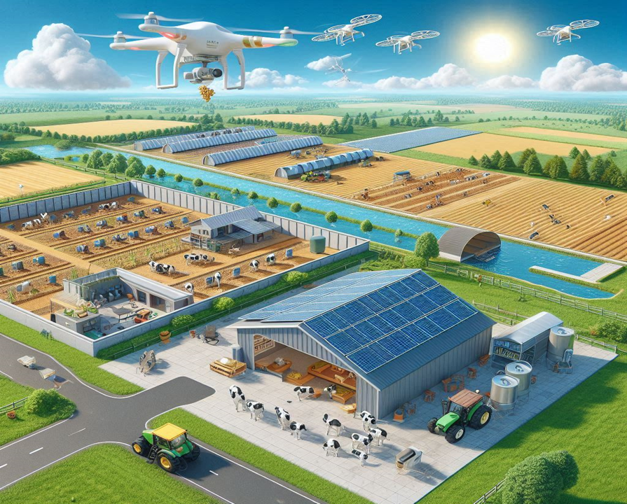

Agri-Tech Services
Agri-Tech services include a wide range of solutions to support agricultural activities. We offer financial services such as bank and agriculture loans, insurance, and training services. Non-financial services include machinery and equipment services, storage and processing unit rentals, delivery and distribution services, and agri-produce auction and sales.

- Surveillance Drones
- Smart Environment Control House
- Data analytics & Control Centre
- Smart Animal Shelter
- Automated Tractors
- Automatic Harvesting Machine
- Smart Irrigation System
- Smart Poultry and food storage house
- Solar panelled roof for Green Energy
- Smart Processing and Storage System
Non-Agri-Tech Services
Non-Agri-Tech services cover a variety of areas. Financial services include bill payment and loan services, as well as utility and charity services. Non-financial services encompass inventory and stock management, vehicle and building rental services, health services and lab tests, and skill, learning, and training services.
- Cooperative Building
- Digital Payment & Billing Services
- Non-Financial Technology Services
- Digital Banking, loans & ERP Services
- Houses & Storage Areas
- Local Market Complex